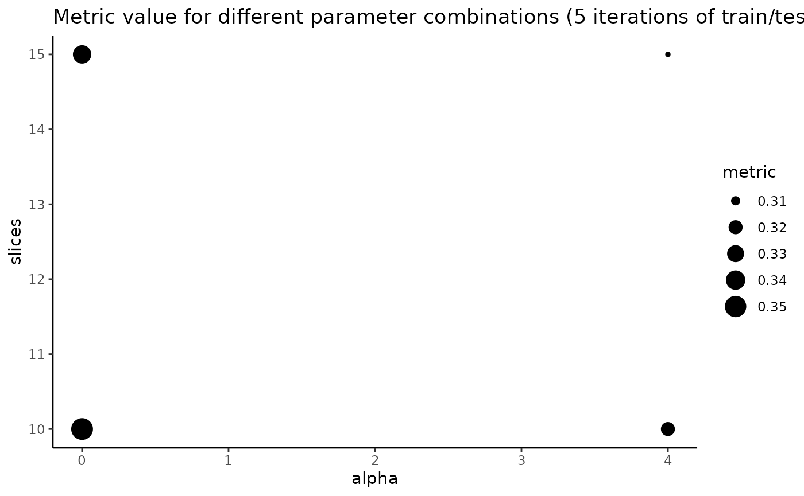
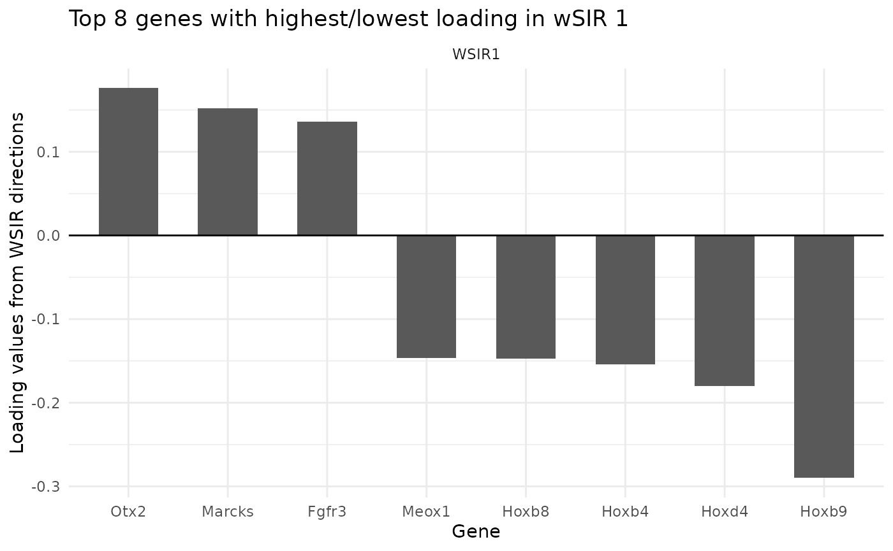
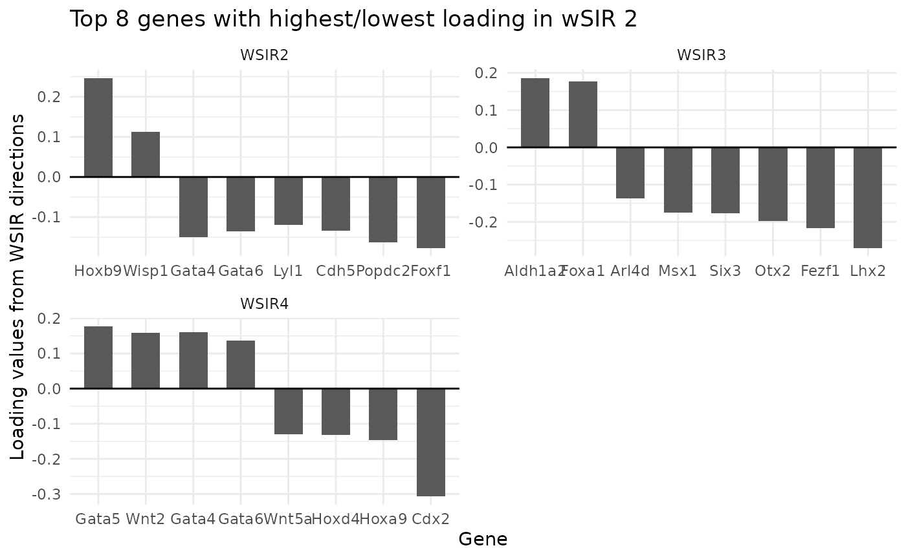
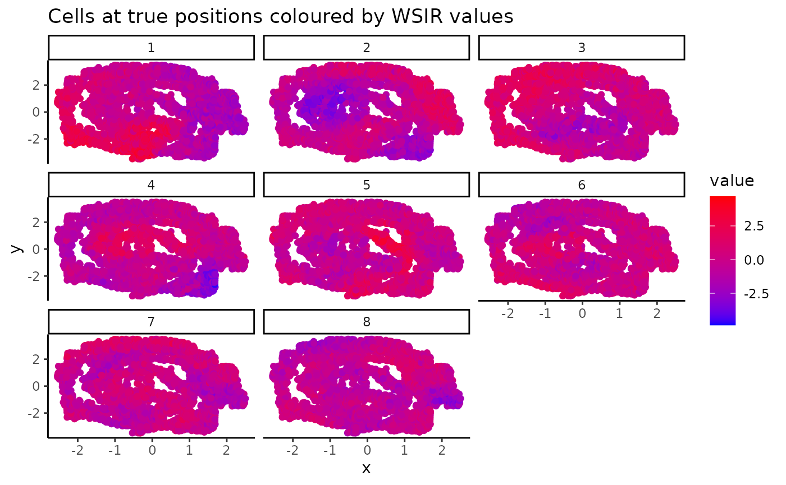

Weighted Sliced Inverse Regression (WSIR)
Max Woollard
Pratibha Panwar
Linh Nghiem
Shila Ghazanfar
Source:vignettes/wSIR_vignette.Rmd
wSIR_vignette.Rmd
library(wSIR) # package itself
library(magrittr) # for %>%
library(ggplot2) # for ggplot
library(Rfast) # for distance correlation
library(doBy) # for which.maxn
library(vctrs) # for vec_rep_each
library(umap) # for umap
library(class) # for example wSIR applicationIntroduction
Weighted Sliced Inverse Regression (wSIR) is a supervised dimension reduction technique for spatial transcriptomics data. This method uses each cell’s gene expression values as covariates and spatial position as the response. This allows us to create a low-dimensional representation of the gene expression data that retains the information about spatial patterns that is present in the gene expression data. The resulting mapping from gene expression data to a spatially aware low-dimensional embedding can be used to project new single-cell gene expression data into a low-dimensional space which preserves the ability to predict each cell’s spatial location from its low-dimensional embedding.
Method Overview
wSIR is an extension of the supervised dimension reduction technique of Sliced Inverse Regression (SIR).
SIR is an existing supervised dimension reduction method which works by grouping together the observations with similar values for the response. For spatial transcriptomics data, this means grouping all the cells into a certain number of tiles based on their spatial position. For example, if we use 4 tiles, then the cells in the top right quadrant of the image/tissue go to one group, those in the top left to another, and so on. Each of those groups is then summarised by averaging the expression level of all cells in each group for each of the genes. From there, eigendecomposition is performed on the resulting matrix of tile-gene means, then returning the SIR directions and SIR scores.
The motivation behind wSIR is that SIR only uses each cell’s spatial position when we are separating the cells into the given number of groups/tiles. Once those groups are created, we lose the fact that some groups may be more spatially related (if they come from adjacent tiles) than other groups (if they come from opposite sides of the tissue). wSIR uses a weight matrix to incorporate the spatial correlation between all pairs of cells in the SIR algorithm. This matrix has dimension H*H, where H is the number of tiles, and the (i,j)th entry represents the distance between tiles i and j. This matrix is incorporated into the eigendeomposition step. The wSIR output has the same structure as the SIR output.
Vignette Overview
In this vignette, we will demonstrate how to use WSIR to obtain a low-dimensional embedding of gene expression data. We will then explore this embedding using the package’s built-in functions. However, this low-dimensional matrix is more importantly used for your own downstream tasks that would benefit from a lower-dimensional representation of gene expression data that preserves information about each cell’s spatial location. We perform some basic downstream analysis to demonstrate the practicality of wSIR.
Data
We use data from Lohoff et al, 2021. The code below would allow you to download the mouse data yourself using the MouseGastrulationData and scran R packages. We randomly sample 20% of the cells from each of the three biological replicate samples.
# Packages needed to download data
#library(scran) # for logNormCounts
#library(MouseGastrulationData) # to download the data for this vignette
set.seed(2024)
seqfish_data_sample1 <- LohoffSeqFISHData(samples = c(1,2))
seqfish_data_sample1 = logNormCounts(seqfish_data_sample1) # log transform variance stabilising
rownames(seqfish_data_sample1) <- rowData(seqfish_data_sample1)[,"SYMBOL"] # change rownames to gene symbols that are consistent
sample1_exprs = t(assay(seqfish_data_sample1, "logcounts")) # extract matrix of gene expressions
sample1_coords = spatialCoords(seqfish_data_sample1)[,1:2] %>% as.data.frame()
colnames(sample1_coords) = c("x", "y")
seqfish_data_sample2 <- LohoffSeqFISHData(samples = c(3,4))
seqfish_data_sample2 = logNormCounts(seqfish_data_sample2)
rownames(seqfish_data_sample2) <- rowData(seqfish_data_sample2)[,"SYMBOL"]
sample2_exprs = t(assay(seqfish_data_sample2, "logcounts"))
sample2_coords = spatialCoords(seqfish_data_sample2)[,1:2] %>% as.data.frame()
colnames(sample2_coords) = c("x", "y")
seqfish_data_sample3 <- LohoffSeqFISHData(samples = c(5,6))
seqfish_data_sample3 = logNormCounts(seqfish_data_sample3)
rownames(seqfish_data_sample3) <- rowData(seqfish_data_sample3)[,"SYMBOL"]
sample3_exprs = t(assay(seqfish_data_sample3, "logcounts"))
sample3_coords = spatialCoords(seqfish_data_sample3)[,1:2] %>% as.data.frame()
colnames(sample3_coords) = c("x", "y")
keep1 = sample(c(TRUE, FALSE), nrow(sample1_exprs), replace = TRUE, prob = c(0.2, 0.8))
keep2 = sample(c(TRUE, FALSE), nrow(sample2_exprs), replace = TRUE, prob = c(0.2, 0.8))
keep3 = sample(c(TRUE, FALSE), nrow(sample3_exprs), replace = TRUE, prob = c(0.2, 0.8))
sample1_exprs = sample1_exprs[keep1,]
sample1_coords = sample1_coords[keep1,]
sample2_exprs = sample2_exprs[keep2,]
sample2_coords = sample2_coords[keep2,]
sample3_exprs = sample3_exprs[keep3,]
sample3_coords = sample3_coords[keep3,]
sample1_cell_types = seqfish_data_sample1$celltype[keep1]
sample2_cell_types = seqfish_data_sample2$celltype[keep2]
sample3_cell_types = seqfish_data_sample3$celltype[keep3]
save(sample1_exprs, sample1_coords, sample1_cell_types,
sample2_exprs, sample2_coords, sample2_cell_types,
sample3_exprs, sample3_coords, sample3_cell_types,
file = "../data/MouseData.rda", compress = "xz")For this vignette and the examples for each function in wSIR, we
simply load this data that has already been saved at
data/MouseData.rda.
data(MouseData)Supervised dimension reduction with wSIR
Parameter Study
wSIR contains two parameters, alpha and
slices. Parameter slices is the number of
groups along each spatial axis into which we split the observations in
the wSIR algorithm. More slices means we could pick up more spatial
information in the gene expression data, but we risk overfitting on the
training set. Parameter alpha modifies the strength of the
weight matrix. alpha = 0 is equivalent to no spatial
weighting, meaning the weight matrix becomes the identity matrix. This
is equivalent to SIR. Larger alpha values means there is
more weight given to spatial correlation rather than gene expression
differences alone in the computation of the wSIR directions.
The function exploreWSIRParams performs wSIR over many
choices of alpha and slices to identify the
most appropriate parameters moving forward. Here, we will use sample 1
only.
These parameters should both be tuned over some reasonable values.
The function exploreWSIRParams computes and visualises the
performance of wSIR for all given combinations of slices
and alpha. The performance is computed from the following
procedure: 1) For each combination of slices and
alpha, split the data into 50% train and 50% test (where
train and test halves both include gene expression data and cell
coordinates). 2) Perform wSIR on the training set using the current
combination of slices and alpha. 3) Project the gene expression data of
the testing set into low-dimensional space using the wSIR results from
step 2. 4) Evaluate wSIR’s performance by computing either the distance
correlation (“DC”, default), or the correlation of distances (“CD”)
between the projected gene expression data of the test set and the test
coordinates, according to parameter metric. 5) Repeat steps
2-4 until it has been done nrep times (nrep is
a parameter whose default is 5). Calculate the average metric value over
each of the nrep iterations for this combination of slices
and alpha. 6) Repeat steps 1-5 with all other combinations of
slices and alpha to obtain an average metric
value for each combination. 7) Return the combination of
slices and alpha with the highest average
metric value and display a plot showing the performance for every
combination of parameters.
Note: a key advantage of wSIR over SIR is parameter robustness. Here,
we can see that SIR’sperformance deteriorates as you use larger values
for slices. However, wSIR’s performance is relatively
stable as you vary both slices and alpha
across reasonable values (e.g. among the default values we optimise
over). In the following plot, the metric value becomes smaller as we
increase the number of slices for
(which corresponds to SIR). Performance is stable for all non-zero alpha
and slice combinations (which correspond to wSIR).
a <- Sys.time()
optim_obj = exploreWSIRParams(X = sample1_exprs,
coords = sample1_coords,
alpha_vals = c(0,.5, 1,2,4,8),
slice_vals = c(5,10,15),
nrep = 20, metric = "CD")
Sys.time()-a## Time difference of 3.80371 mins
optim_obj$plot
wSIR Computation
We next perform wSIR using the optimal parameter combination that we
found in the previous section. We use the gene expression matrix and
spatial coordinates from sample 1 here. This returns a list of results
with 5 (named) slots, whose details can be found at
?wSIR::wSIR.
wsir_obj = wSIR(X = sample1_exprs,
coords = sample1_coords,
slices = optim_obj$best_slices,
alpha = optim_obj$best_alpha,
optim_params = FALSE)
names(wsir_obj)## [1] "scores" "directions" "estd" "W" "evalues"wSIR Results Analysis
In this section, we will demonstrate how to use the built-in analysis functions to better understand how wSIR creates a spatially-informed low-dimensional embedding. These functions all use a wSIR result as an input. Here, we use the output from the previous section, meaning we are studying the result of performing wSIR on sample 1 only.
wSIR Top Genes
The findTopGenes function finds and plots the genes with
highest loading in the specified wSIR directions (default is direction
1). If a gene has high loading (in terms of magnitude), it is more
important to the wSIR direction. Since the wSIR directions are designed
to retain information about each cell’s spatial position, the genes with
high loading should be spatially-related genes.
In the plot below, we can see which genes have the highest loading in wSIR direction 1. This is useful as it gives us an intuition about how wSIR creates the low-dimensional embedding. We can see that some of the genes are known spatial genes (e.g. Cdx2, Hox-), which is what we would expect to see.
We can simultaneously plot top genes for multiple directions, and utilise the
top_genes_obj = findTopGenes(WSIR = wsir_obj, highest = 8) # create top genes object
top_genes_plot = top_genes_obj$plot # select plot
top_genes_plot # print plot
top_genes_obj = findTopGenes(WSIR = wsir_obj, highest = 8, dirs = 2:4)
top_genes_plot = top_genes_obj$plot
top_genes_plot
Visualising wSIR Scores
The visualiseWSIRDirections function plots each cell at
its spatial position, coloured by its value for each of the specified
wSIR columns. This gives us an understanding of what each column of the
low-dimensional embedding represents.
Below, we visualise the cells at their spatial positions, coloured by each of the 5 wSIR directions The top left plot illustrates how, for this example, wSIR direction 1 captures information about the “y” spatial axis, since cells with higher “y” coordinate have low wSIR1 value, while cells with lower “y” coordinate have higher wSIR1 value. wSIR2 is shown in the next plot over (the one titled “2”), and we can see that wSIR column two appears to capture information about the “x” spatial coordinate. The remaining three wSIR columns all contain information about cell types, which we can tell by the regions of high and low wSIR column values spread across the tissue.
vis_obj = visualiseWSIRDirections(coords = sample1_coords, WSIR = wsir_obj, dirs = 8) # create visualisations
vis_obj
UMAP on low-dimensional embedding
The two functions generateUmapFromWSIR and
plotUmapFromWSIR create and display UMAP dimension
reduction calculated on the wSIR low-dimensional embedding. We can
colour the UMAP plot (where each point represents a cell) by its value
for various genes of interest. This visualises the structure of the wSIR
dimension reduction space, which is useful to gain more intuition about
what the space represents. Specifically, we can see if the wSIR space
contains neighbourhoods of high expression for specific genes, thus
better understanding how this space is made.
To specify which genes we would like to include, we can use the
output from the findTopGenes function from above, which
finds spatially-related genes by ranking those with the highest loading
in relevant wSIR directions. This output is then the value for the
highest_genes parameter. Otherwise, we could also specify
our own genes of interest if there are some specific genes we would like
to visualise. For example, if we wanted to visualise the expression
distribution for Cdx2 and Hoxb4, we could use
genes = c("Cdx2", "Hoxb4") as an argument in
plotUmapFromWSIR (and leave highest_genes
blank).
Below, we use the UMAP function to visualise the wSIR space computed
on the gene expression data from sample 1. We colour each cell by their
values for the 6 genes with highest value in wSIR direction 1 (as found
by the findTopGenes function previously). We can see that
for some of these genes, there are specific regions of high expression
in the UMAP plots, suggesting that the wSIR space separates cells based
on their expression for those genes.
umap_coords = generateUmapFromWSIR(WSIR = wsir_obj)
umap_plots = plotUmapFromWSIR(X = sample1_exprs,
umap_coords = umap_coords,
highest_genes = top_genes_obj,
n_genes = 6)
umap_plots
Projection of new data with wSIR
A key functionality of the wSIR package is the ability to project new single-cell data into the wSIR low-dimensional space. This will allow for a low-dimensional representation of gene expression data that contains information about each cell’s spatial position even though we do not have access to the spatial coordinates for this new data. This low-dimensional wSIR embedding would be especially useful for downstream applications, like spatial alignment or spatial clustering (where we don’t have spatial coordinates).
Here, we will demonstrate the steps for that, as well as a specific application.
For each projection example, we will perform wSIR on a spatial transcriptomics dataset which includes gene expression data and spatial coordinates. We will then project a “single-cell” dataset, which only contains the gene expression matrix, into wSIR low-dimensional space.
Single-sample spatial dataset, single-sample single-cell dataset
Here, we demonstrate the steps to project a new sample single-cell dataset into wSIR low-dimensional space having already performed wSIR on the spatial transcriptomics dataset from the first sample.
We have already performed wSIR on sample 1, so here we project sample 2’s gene expression matrix into the wSIR low-dimensional space, which will therefore have an ability to predict sample 2’s (unknown at this stage) spatial locations.
sample2_low_dim_exprs = projectWSIR(wsir = wsir_obj, newdata = sample2_exprs)Check the dimension of sample 2’s low-dimensional gene expression data:
dim(sample2_low_dim_exprs)## [1] 2986 20Observe some of sample 2’s low-dimensional gene expression data:
head(sample2_low_dim_exprs)## [,1] [,2] [,3] [,4] [,5] [,6]
## [1,] 1.0930341 -0.1443871 -1.5090562 1.5873578 -1.3890866 0.3799610
## [2,] 0.4680595 0.5327497 -0.3728135 1.0015734 0.8920196 0.1513758
## [3,] 1.2711455 -0.7397591 -1.4112419 -0.8839003 0.2468790 0.3832880
## [4,] 1.7531946 -0.1143880 -0.7064318 -0.3602051 0.4724328 -0.2961441
## [5,] 2.2381875 -0.5924558 -0.3165188 0.2141844 0.7782123 -0.2621179
## [6,] 1.3299499 -0.8290736 0.6474762 0.6397734 0.5299646 -0.9353155
## [,7] [,8] [,9] [,10] [,11] [,12]
## [1,] -3.4678998 0.56681244 -0.81551059 1.1852559 -0.73526941 -1.0785081
## [2,] -1.0017729 1.95474647 -0.43692515 -0.1603876 -0.15958819 -0.4427703
## [3,] -2.3845440 0.08795112 1.16277476 0.2721857 0.28169183 0.4604845
## [4,] -2.2187255 0.65176353 0.20339372 1.2128839 1.07096226 0.4317445
## [5,] -0.5669189 1.84121180 0.06402206 -0.3221178 0.02488601 0.3517457
## [6,] -1.0554684 1.07326688 -0.42296176 -0.3972216 -0.72847203 0.7158252
## [,13] [,14] [,15] [,16] [,17] [,18]
## [1,] 0.22645766 0.7414184 0.885021243 1.74928451 0.4172434 -0.36172912
## [2,] -0.11743827 -1.3097013 0.335409580 -0.19737044 1.9184451 0.06779531
## [3,] -0.09524678 -0.7460559 -0.583083970 0.25165178 0.6701605 0.43165415
## [4,] -0.04954717 -1.0375261 -0.005446275 -0.59153455 0.4787165 0.06904808
## [5,] 1.03117637 -0.4426845 -0.023429569 0.03480782 -0.1772584 -0.21056960
## [6,] 0.35505985 -0.2426742 1.098536792 0.38752300 0.1341204 0.42348720
## [,19] [,20]
## [1,] 0.2994094 0.71759073
## [2,] -0.3500336 -0.06717946
## [3,] 0.6338821 0.32693292
## [4,] 0.6517039 0.23217160
## [5,] -1.2366838 0.41684787
## [6,] -0.9978965 0.58964001This low-dimensional gene expression data can then be used for any later tasks which would benefit from a low-dimensional embedding of the gene expression data for all the samples, rather than just the gene expression data.
Multi-sample spatial dataset, single-sample single-cell dataset
Here, we perform wSIR on samples 1 and 2 together. This requires the gene expression matrices from both samples joined together into one matrix, and the coords dataframes joined into one dataframe. We do this concatenation using rbind. We then specify the sample IDs for each row in the joined expression matrix and coordinates dataframe using the samples argument. This is a vector with a “1” for each row in sample 1 and a “2” for each row in sample 2.
We use the resulting wSIR output to project the gene expression data from sample 3 into low-dimensional space. We check the dimension of the resulting matrix.
wsir_obj_samples12 <- wSIR(X = rbind(sample1_exprs, sample2_exprs),
coords = rbind(sample1_coords, sample2_coords),
samples = c(rep(1, nrow(sample1_coords)), rep(2, nrow(sample2_coords))),
slices = optim_obj$best_slices,
alpha = optim_obj$best_alpha,
optim_params = FALSE)
sample3_low_dim_exprs <- projectWSIR(wsir = wsir_obj_samples12, newdata = sample3_exprs)
dim(sample3_low_dim_exprs)## [1] 4607 29This low-dimensional matrix can then be used for downstream tasks which would benefit from a low-dimensional embedding of sample 3’s gene expression matrix that contains information about each cell’s location. Examples for downstream use include spatial alignment of single-cell and spatial gene expression data via Tangram, using the wSIR scores as the input rather than the (unreduced) gene expression matrix.
An example of a very simple application is using the wSIR scores as an input to a KNN cell type classification algorithm. This is demonstrated below, using the ‘knn’ function from ‘class’ package.
samples12_cell_types = append(sample1_cell_types, sample2_cell_types)
knn_classification_object = knn(train = wsir_obj_samples12$scores,
test = sample3_low_dim_exprs,
cl = samples12_cell_types,
k = 10)
tail(knn_classification_object)## [1] Presomitic mesoderm Presomitic mesoderm Presomitic mesoderm
## [4] Presomitic mesoderm Presomitic mesoderm Presomitic mesoderm
## 24 Levels: Allantois Anterior somitic tissues ... Surface ectodermIn the above code, we use the wSIR scores as input for a simple KNN-based cell type classification tool. We print the tail of the prediction vector, demonstrating how we can use the wSIR-based low-dimensional gene expression data from a new sample as a step in a realistic analysis pipeline.
Session Info
## R version 4.4.1 (2024-06-14)
## Platform: x86_64-pc-linux-gnu
## Running under: Ubuntu 22.04.5 LTS
##
## Matrix products: default
## BLAS: /usr/lib/x86_64-linux-gnu/openblas-pthread/libblas.so.3
## LAPACK: /usr/lib/x86_64-linux-gnu/openblas-pthread/libopenblasp-r0.3.20.so; LAPACK version 3.10.0
##
## locale:
## [1] LC_CTYPE=C.UTF-8 LC_NUMERIC=C LC_TIME=C.UTF-8
## [4] LC_COLLATE=C.UTF-8 LC_MONETARY=C.UTF-8 LC_MESSAGES=C.UTF-8
## [7] LC_PAPER=C.UTF-8 LC_NAME=C LC_ADDRESS=C
## [10] LC_TELEPHONE=C LC_MEASUREMENT=C.UTF-8 LC_IDENTIFICATION=C
##
## time zone: UTC
## tzcode source: system (glibc)
##
## attached base packages:
## [1] stats graphics grDevices utils datasets methods base
##
## other attached packages:
## [1] class_7.3-22 umap_0.2.10.0 vctrs_0.6.5 doBy_4.6.22
## [5] Rfast_2.1.0 RcppParallel_5.1.9 RcppZiggurat_0.1.6 Rcpp_1.0.13
## [9] ggplot2_3.5.1 magrittr_2.0.3 wSIR_0.99.0 BiocStyle_2.32.1
##
## loaded via a namespace (and not attached):
## [1] gtable_0.3.5 xfun_0.47 bslib_0.8.0
## [4] lattice_0.22-6 tools_4.4.1 generics_0.1.3
## [7] parallel_4.4.1 tibble_3.2.1 fansi_1.0.6
## [10] highr_0.11 pkgconfig_2.0.3 Matrix_1.7-0
## [13] desc_1.4.3 lifecycle_1.0.4 farver_2.1.2
## [16] compiler_4.4.1 stringr_1.5.1 textshaping_0.4.0
## [19] microbenchmark_1.5.0 munsell_0.5.1 codetools_0.2-20
## [22] htmltools_0.5.8.1 sass_0.4.9 yaml_2.3.10
## [25] pillar_1.9.0 pkgdown_2.1.1 jquerylib_0.1.4
## [28] tidyr_1.3.1 MASS_7.3-60.2 openssl_2.2.1
## [31] BiocParallel_1.38.0 cachem_1.1.0 boot_1.3-30
## [34] RSpectra_0.16-2 Deriv_4.1.6 tidyselect_1.2.1
## [37] digest_0.6.37 stringi_1.8.4 dplyr_1.1.4
## [40] purrr_1.0.2 bookdown_0.40 labeling_0.4.3
## [43] distances_0.1.11 cowplot_1.1.3 fastmap_1.2.0
## [46] grid_4.4.1 colorspace_2.1-1 cli_3.6.3
## [49] utf8_1.2.4 broom_1.0.6 withr_3.0.1
## [52] scales_1.3.0 backports_1.5.0 rmarkdown_2.28
## [55] modelr_0.1.11 reticulate_1.39.0 png_0.1-8
## [58] askpass_1.2.0 ragg_1.3.3 evaluate_1.0.0
## [61] knitr_1.48 rlang_1.1.4 glue_1.7.0
## [64] BiocManager_1.30.25 jsonlite_1.8.8 R6_2.5.1
## [67] systemfonts_1.1.0 fs_1.6.4